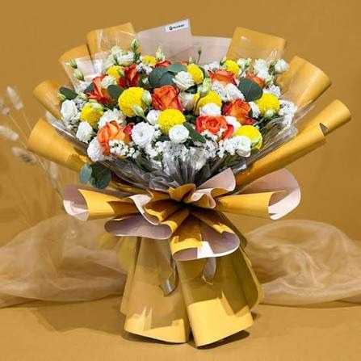

WELCOME TO JK FLOWERS
Flowers Made with Love.
Beautiful floral arrangements for life's most meaningful moments. Let every flower tell a story.
Explore Our Bouquets Discover Our Story
✿
Welcome to JK Flowers
Flowers for life's special moments.
Welcome to JK Flowers! Explore our collection of bouquets and floral arrangements for gifts, celebrations, and other special occasions. Discover designs that help make meaningful moments even more memorable.
✿
Featured Arrangements
Take a look at some of our floral designs.

✿

A Little About Us
Get to know JK Flowers, our shop, and the floral arrangements we offer.
Learn More
✿